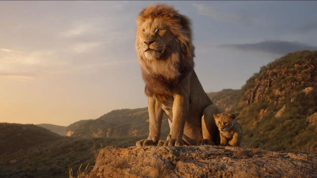
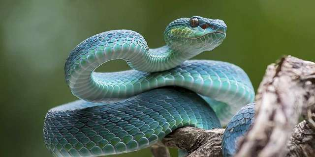
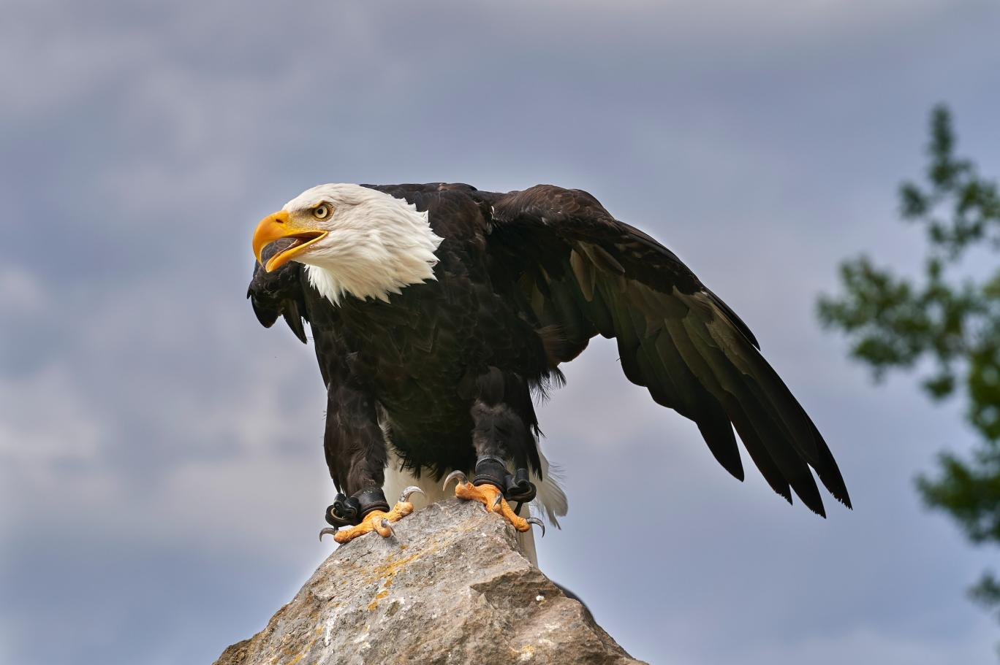

Hayvanlar aleminin çeşitliliği, dünya üzerindeki yaşamın en etkileyici yönlerinden biridir.
Memeliler, sıcakkanlı ve genellikle tüylü hayvanlardır. Çoğu memeli yavru bakımı yapar ve süt üreterek yavrularını besler.
Sürüngenler, soğuk kanlı hayvanlardır ve çoğu türü yumurta ile çoğalır
Kuşlar, genellikle uçabilen, tüylü ve sıcakkanlı hayvanlardır.
| Hayvan türü | Kategori | Habitat |
|---|---|---|
| Aslan | Memeli | Ormanlar |
| Yılan | Sürüngen | Nehirler |
| Kartal | Kuş | Dağlar |